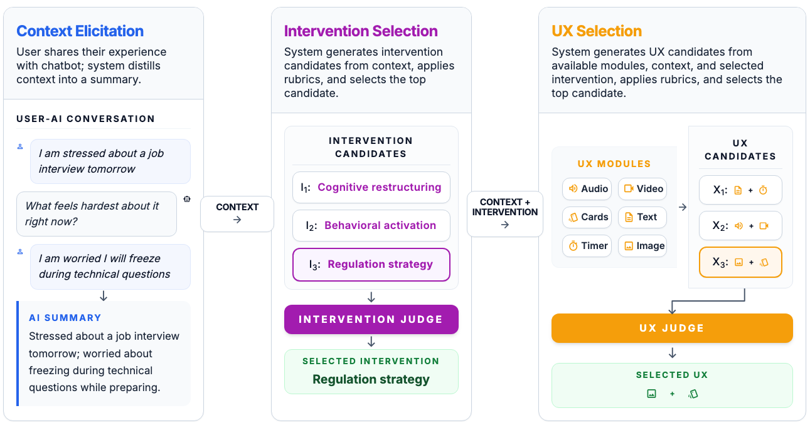
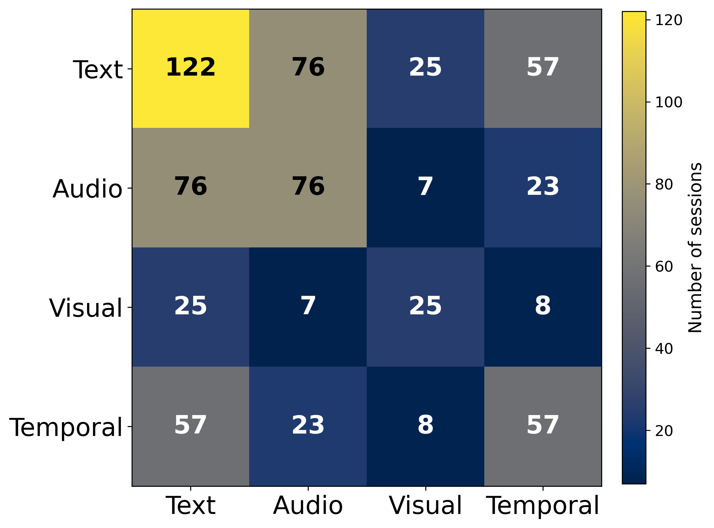
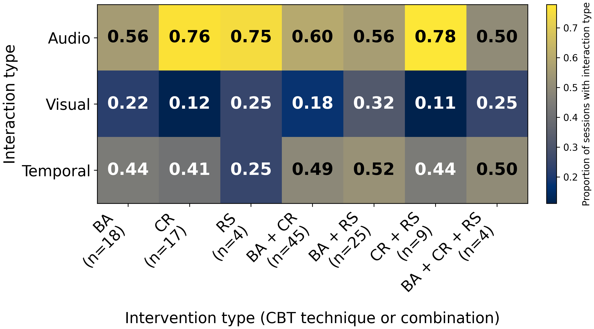

Abstract
Digital mental health (DMH) tools have extensively explored personalization of interventions to users' needs and contexts. However, this personalization often targets what support is provided, not how it is experienced. Even well-matched content can fail when the interaction format misaligns with how someone can engage. We introduce generative experience as a paradigm for DMH support, where the intervention experience is composed at runtime. We instantiate this in GUIDE, a system that generates personalized intervention content and multimodal interaction structure through rubric-guided generation of modular components. In a preregistered study with N=237 participants, GUIDE significantly reduced stress (p=.02) and improved the user experience (p=.04) compared to an LLM-based cognitive restructuring control. GUIDE also supported diverse forms of reflection and action through varied interaction flows, while revealing tensions around personalization across the interaction sequence. This work lays the foundation for interventions that dynamically shape how support is experienced and enacted in digital settings.


System Diagram

Results
We evaluated GUIDE in a preregistered study with 237 participants, comparing it against a strong LLM-based cognitive restructuring system.
GUIDE produced significantly greater stress reduction and better user experience. Participants also reported higher enjoyment, greater willingness to reuse the activity, and felt the experience more closely reflected what they shared. Beyond outcomes, GUIDE generated a genuine diversity of experiences, combining different CBT techniques and multimodal interaction types across participants.
Outcome Summary
| Outcome | GUIDE (M ± SD) |
Control (M ± SD) |
p | Cohen’s d |
|---|---|---|---|---|
| Primary outcomes | ||||
| Stress reduction* | 0.65 ± 0.7 | 0.35 ± 0.8 | .02 | 0.39 |
| User experience* | 0.49 ± 0.6 | 0.33 ± 0.6 | .04 | 0.27 |
| Exploratory outcomes | ||||
| Stress mindset improvement | 1.44 ± 3.1 | 0.75 ± 3.5 | .09 | 0.21 |
| Perceived personalization | 3.39 ± 1.1 | 3.40 ± 1.1 | .60 | -0.01 |
| Perceived system understanding | 3.44 ± 1.0 | 3.31 ± 1.0 | .20 | 0.13 |
| Perceived reflection of user input* | 3.70 ± 0.9 | 3.43 ± 1.0 | .04 | 0.30 |
| Intent to reuse activity* | 3.26 ± 1.0 | 2.90 ± 1.2 | .03 | 0.33 |
| Intent to recommend activity | 3.22 ± 1.0 | 3.00 ± 1.2 | .09 | 0.20 |
| Activity length appropriateness | 3.43 ± 1.0 | 3.49 ± 1.1 | .65 | -0.05 |
| Activity enjoyment* | 3.44 ± 1.0 | 3.16 ± 1.0 | .04 | 0.28 |
* p < .05, ** p < .01, *** p < .001
Diversity of Generated Interaction Types

